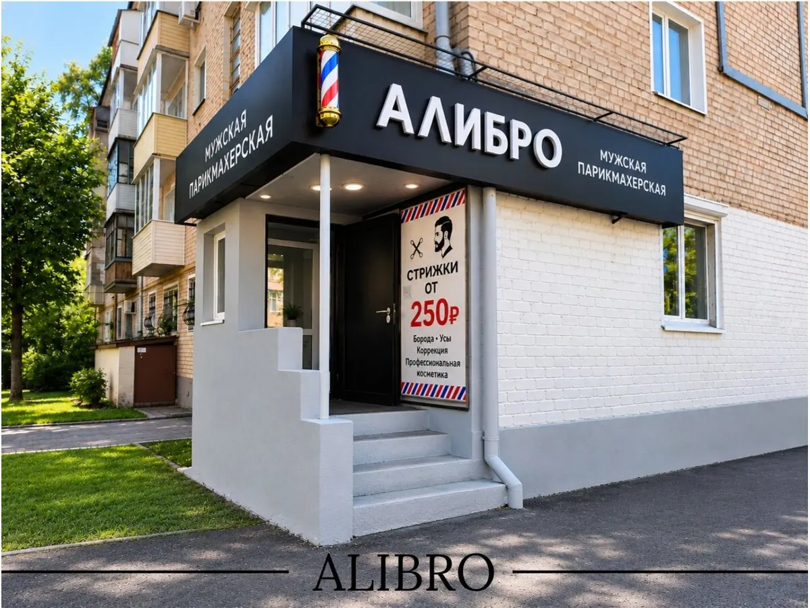
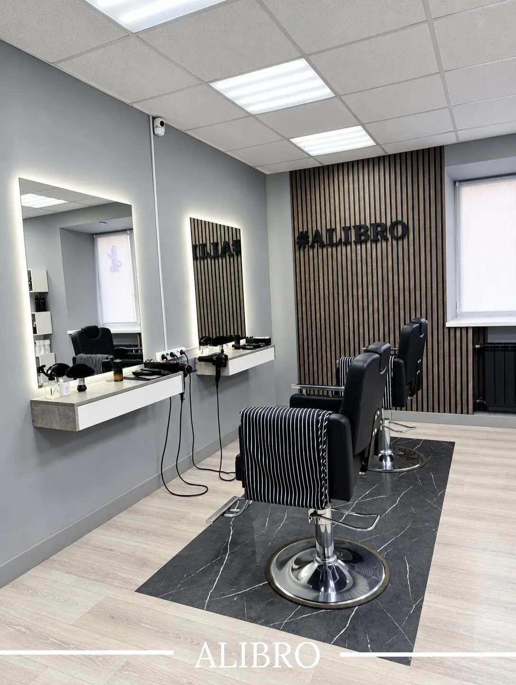
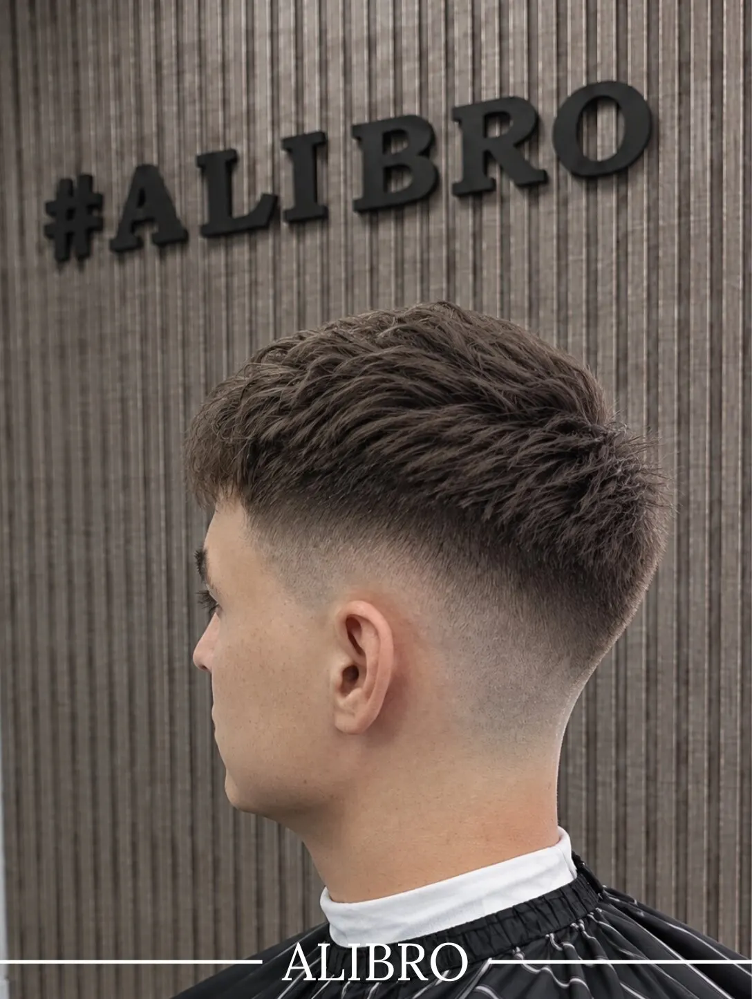
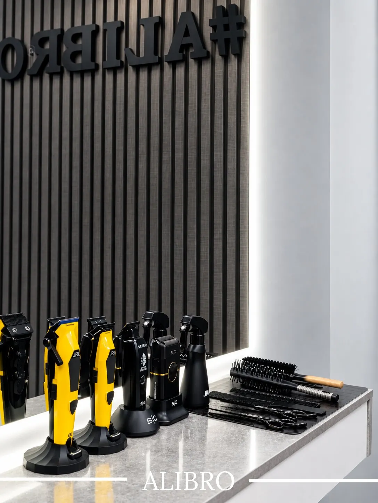

Мужская парикмахерская · Йошкар-Ола, улица Якова Эшпая
Мужская парикмахерская Alibro в Йошкар-Оле: стрижка 599 ₽
Мужская и детская стрижка, стрижка отец + сын, оформление бороды и усов. Каждый день с 9:30 до 19:00, можно с собакой.
- Мужская стрижка 599 ₽, комбо волосы + борода 950 ₽
- Детская стрижка для детей старше 4 лет
- Оплата картой, предварительная запись

Цены
Прайс с карточки на Яндекс.Картах.
Стрижки
- Стрижка мужская599 ₽
- Стрижка без насадки или под 1 насадку250 ₽
- Стрижка детская (старше 4 лет)599 ₽
- Отец + сын1 099 ₽
Борода и комплексы
- Комбо: волосы + борода950 ₽
- Оформление бороды и усов450 ₽
Оплата картой.
Как записаться
Пишете во ВКонтакте или звоните
Назовите услугу и удобное время.
Подтверждаем время
Отвечаем, свободно ли окно, и закрепляем его за вами.
Приходите на Эшпая, 117
Вход с вывеской «Алибро», мужская парикмахерская.
Стрижка
Мастер выслушивает пожелания и делает именно так, как просили.
Оплата
Картой, по отзывам гостей удобный формат оплаты.



Что гости отмечают в отзывах
Аккуратная стрижка
Гости пишут, что мастер делает ровно так, как просили.
Разговор по душам
Во время стрижки можно поговорить, мастер поддерживает беседу.
Запись онлайн и приём вне очереди
Один из гостей записался онлайн, приехал раньше и его приняли.
Цены
Гости называют цены более чем адекватными за такое качество.
Отзывы с Яндекс.Карт
«Был в Alibro в Йошкар-Оле и остался очень доволен. Мастер сделал шикарную стрижку: аккуратно, чётко, именно так, как я хотел. Сам мастер очень приятный и разговорчивый, время пролетело незаметно, атмосфера максимально комфортная. За 600 рублей такое качество просто подарок, цена более чем адекватная. В Йошкар Олу больше никогда не приеду, но если бы приехал, обязательно пришёл бы еще раз!»
hojnok · 28 сентября
«Был проездом в городе, искал где подстричься. По отзывам выбрал Alibro и не ошибся. Записался онлайн, но приехал пораньше и приняли вне очереди. Али хороший мастер, подстриг, как попросил. Веселый, добрый и общительный. 👍 Удобный формат оплаты Рекомендую!»
Егор · 14 июня
«Не первый раз в данном барбершопе. Стрижка волос и бороды, отлично справляется барбер! Во время работы можно поговорить о жизни, работе или чем то ещё.., барбер всегда подключиться в разговор.»
Роман Г. · 16 июня
Отзывы с карточки на Яндекс.Картах.
Частые вопросы
Как записаться?
Напишите во ВКонтакте или позвоните +7 (993) 388-27-00: назовите услугу и время.
Где вы находитесь?
Йошкар-Ола, улица Якова Эшпая, 117.
До скольки работаете?
Каждый день с 9:30 до 19:00.
Подстригаете ли детей?
Да, детская стрижка для детей старше 4 лет стоит 599 ₽.
Можно с собакой?
Да, на карточке указано, что можно с собакой.
Как можно оплатить?
Картой.
Напишите, на какое время записать
- Адрес
- Йошкар-Ола, улица Якова Эшпая, 117, Йошкар-Ола
- Часы
- Ежедневно 09:30–19:00
- Телефон
- +7 (993) 388-27-00